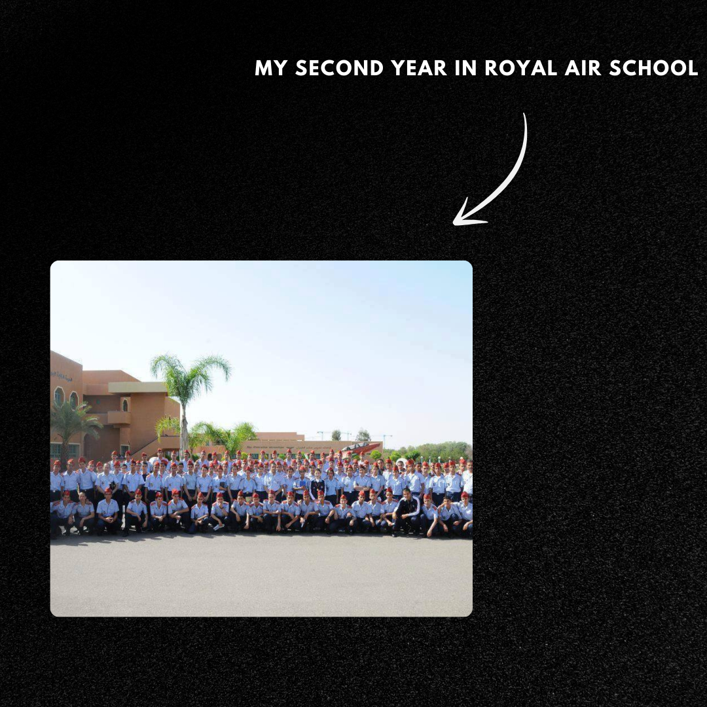
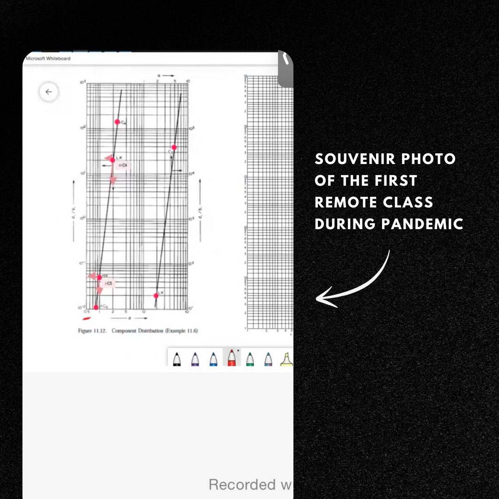
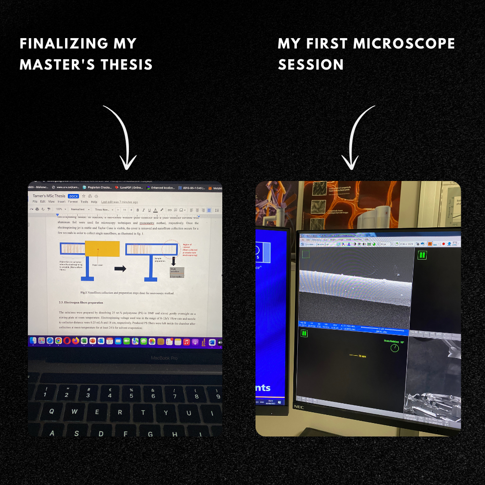
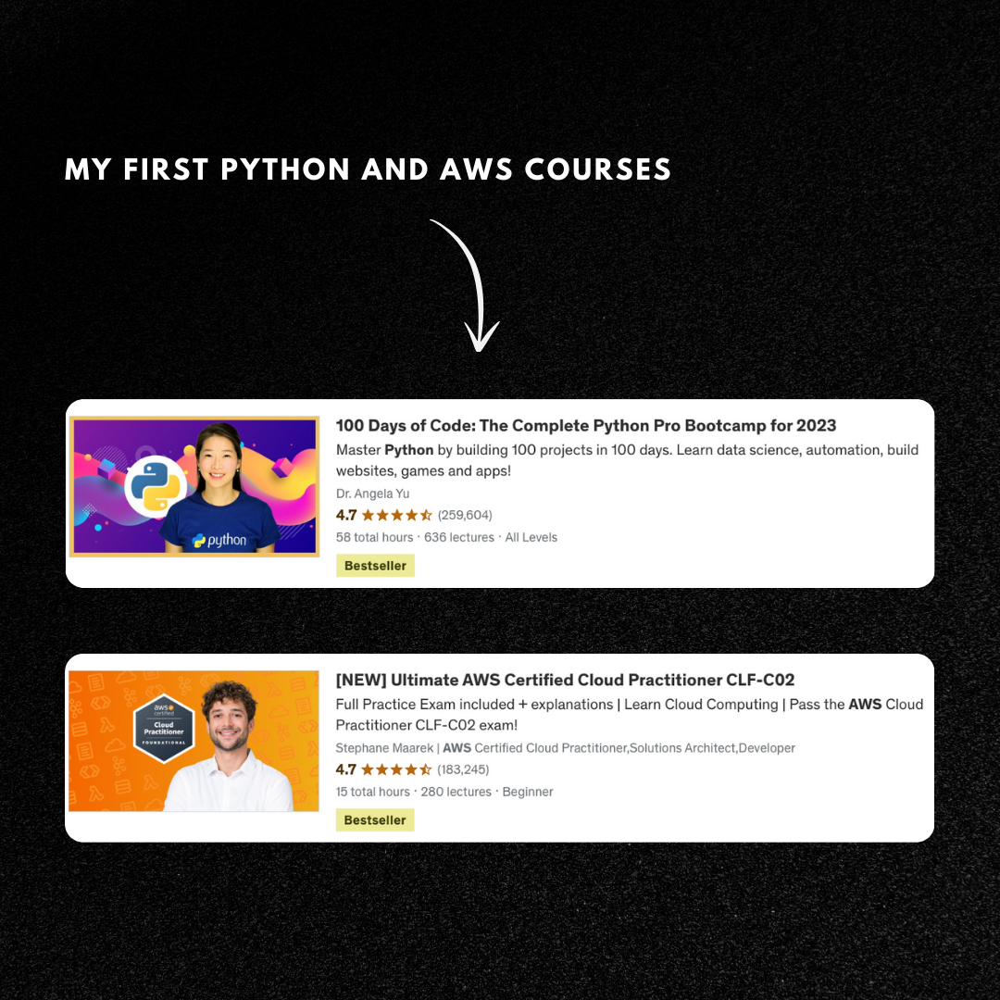
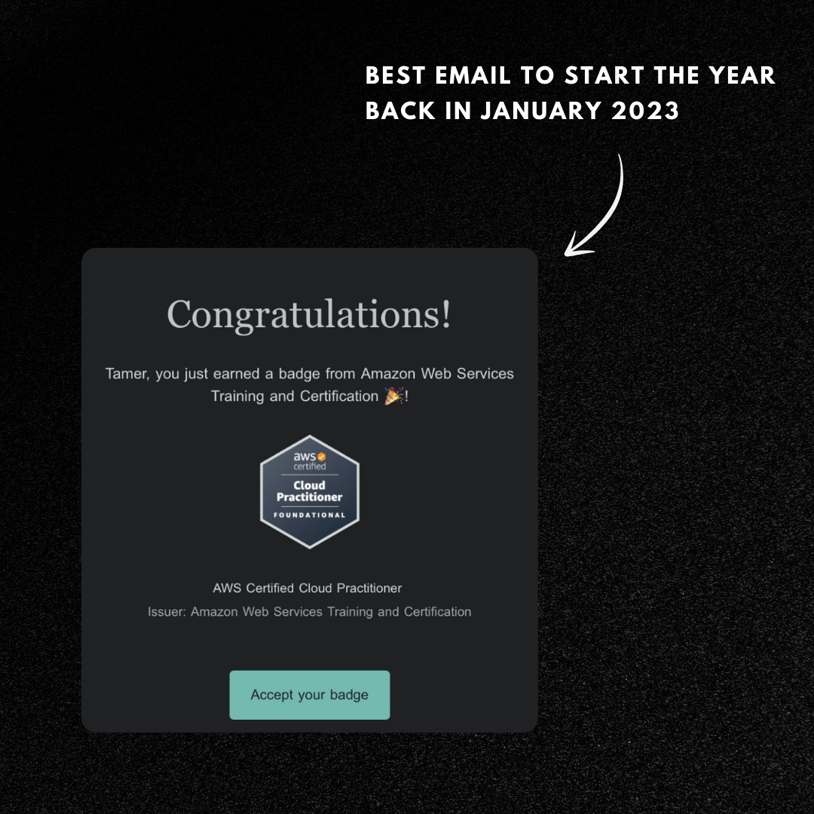
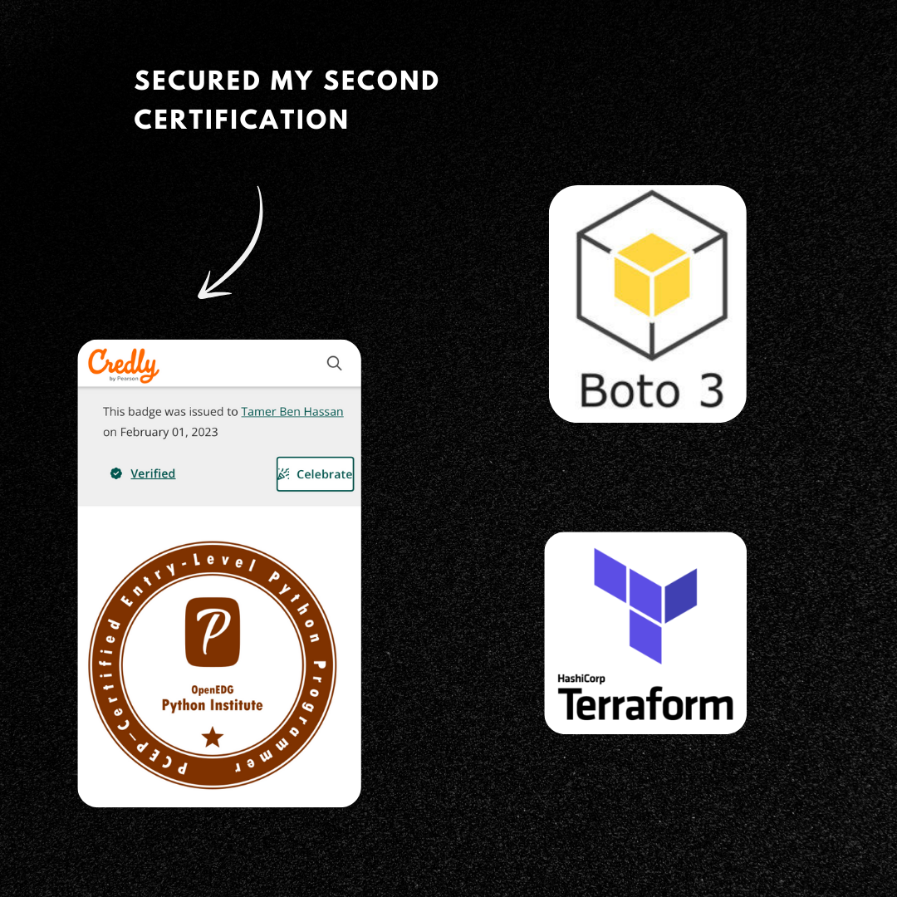
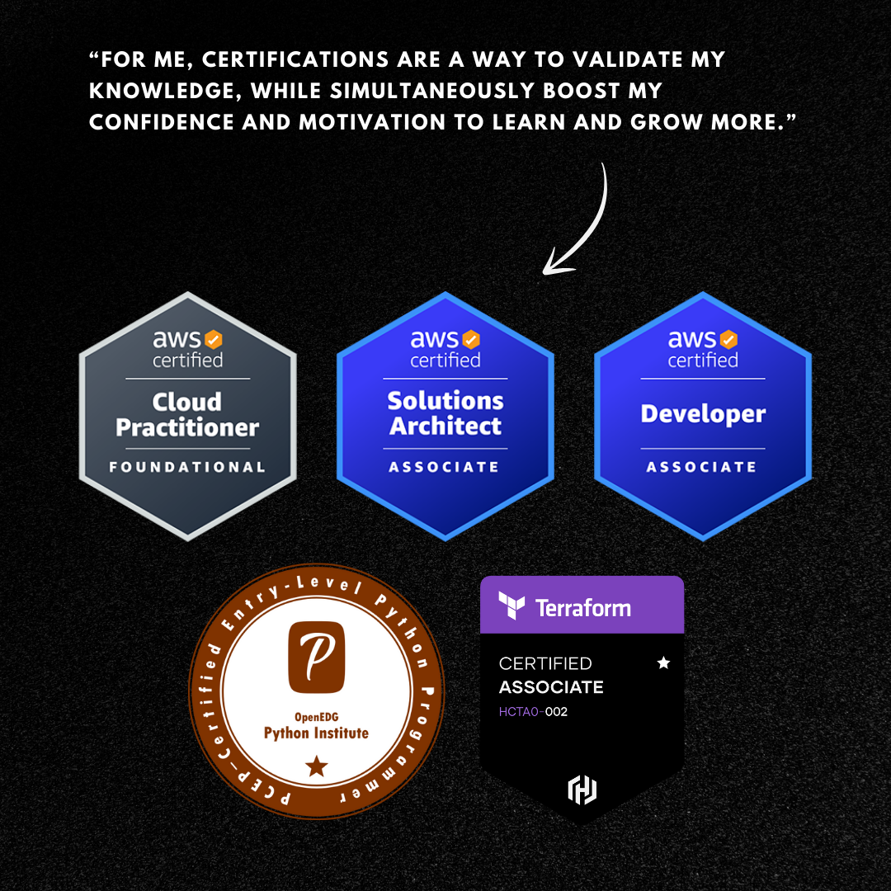
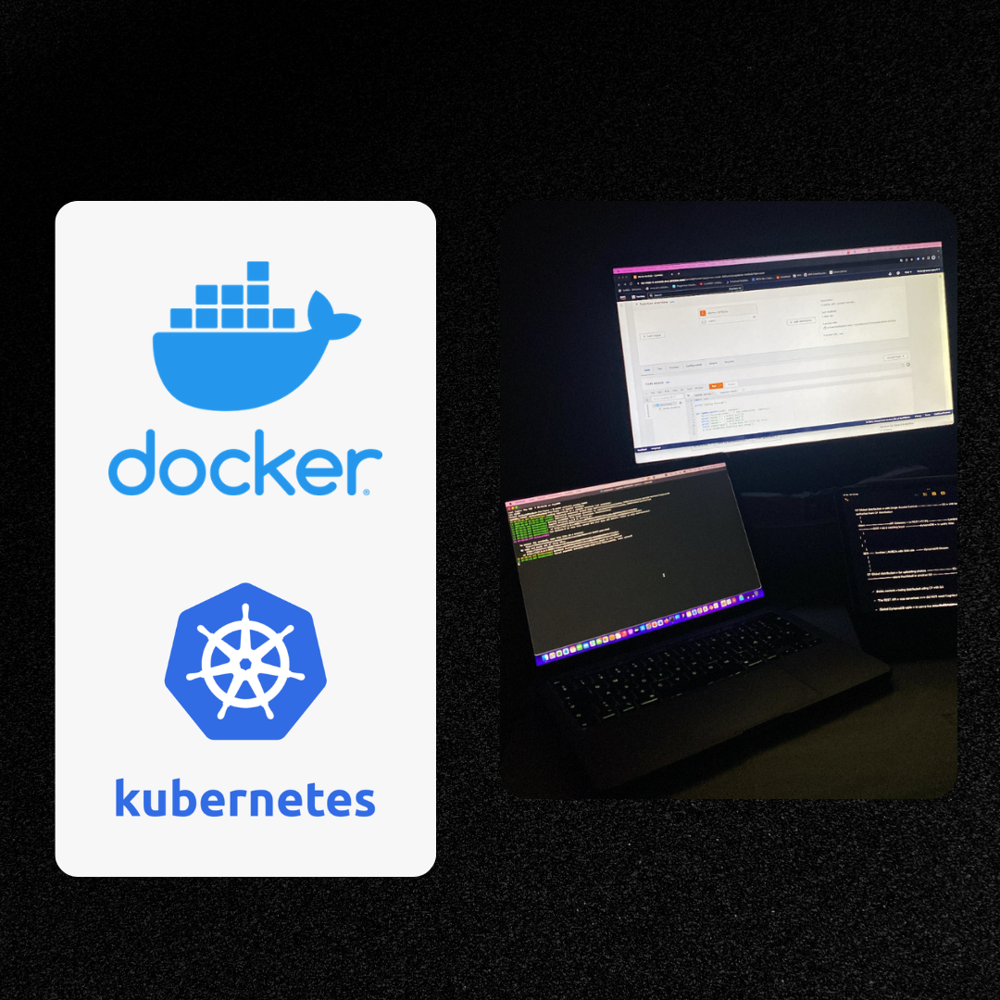

The Journey of My Educational and Professional Career
My journey began with ONE perspective: "Choose a job you love, and you will never have to work a day in your life."
My story starts 8 years ago... Strap in.
June 2015
Graduated from the top-rated military high school in Morocco, "L’école Royal de l’Air", acquiring key traits and deciding to leave military life for broader professional prospects.

2015-2020
Enrolled in a Turkish university for Chemical Engineering as a new experience (as I was good in Maths and Chemistry🔬).
Faced challenges during COVID-19😷 in 2020, which led to reevaluating career choices due to the lack of online resources in the field which blocked my improvements that I had in mind.
Faced challenges during COVID-19😷 in 2020, which led to reevaluating career choices due to the lack of online resources in the field which blocked my improvements that I had in mind.

September 2021
Following my Bachelor's degree, I pursued a Master's in Nanoscience, including an apprenticeship where I learned basic programming, particularly in Python and its libraries.
Publications & Theses references


March 2022
A pivotal period where exposure to Python led to an interest in cloud computing, prompting self-study and online courses alongside Master's studies.
I started exploring other topics and reading blogs which drove me to Cloud computing.
Since then, I started slowly studying and taking online courses in parallel of my master studies and got very curious to know more.

January 2023
Graduated and fully committed to cloud computing, securing an internship in Woopcase, and earning my first AWS certification.
I got an internship in Woopcase thanks to my friend (Thank you Simo 😃) where I got to learn a lot and see the practical world.
I went on developing my knowledge and validated my first AWS certification which gave me the confidence and boost me up to want more and learn more.

March 2023
I advanced skills in understanding the SDLC process, AWS ecosystem, Designing Pipelines using Jenkins, and IaC using Terraform.

September 2023
Achieved three AWS certifications, Terraform Associate, and PCEP Python certifications, and hungry for more. I began seeking new opportunities to further expand my skills and career.

October 2023
Gained practical experience in cloud computing and started my second internship as a DevOps Engineer. Participated in meetings, contributing to user stories, by applying DevSecOps practices, writing AWS resources using Terraform, Designing Jenkins pipelines and its different stages.

April 2024
Started exploring new professional avenues and opportunities to apply and enhance my DevOps skills in a more challenging and dynamic environment.
Today
In pursuing new opportunities, I am deeply committed to DevSecOps practices, constantly enhancing my knowledge to apply robust security measures throughout the SDLC.
I also write articles DevOps related on Medium.
PS. This Website is 100% AWS-hosted
(Check my Github for more details about this project)
I also write articles DevOps related on Medium.
PS. This Website is 100% AWS-hosted
(Check my Github for more details about this project)
Take a look at my Medium and GitHub profiles below 👇